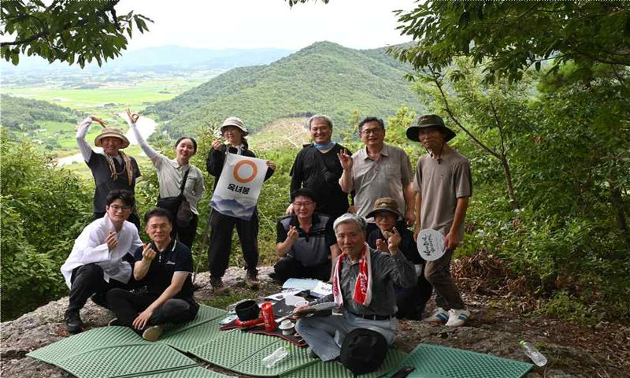
8. 8. 기도·순례
영산 법인 기도 참석
영산성지 · 청운회
청운회 회원이 영산성지 법인 기도에 참석함.
11월 정단회를 준비하며 각 항단의 소식을 모으고 있습니다. 교무님 단의 소식도 보내주시면 정단회 자료에 담아 함께 공유드릴 수 있도록 하겠습니다.
모든 항목을 채우지 않으셔도 됩니다. 사진이 있으면 함께 보내주셔도 좋습니다.
형식은 자유롭게 정해 주시면 됩니다. 먼저 보내주신 두 단의 상황보고를 함께 나눕니다.

청운회 회원이 영산성지 법인 기도에 참석함.
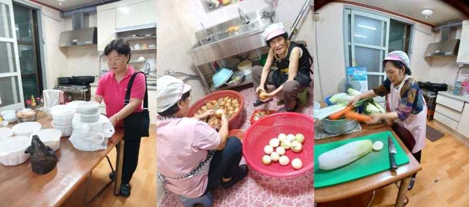
매월 1회 교당별 순교 교도를 지정해 반찬을 만들어 배포함(현재 30가정). 내년 교구 주관으로 배달 가정 확대 예정임.
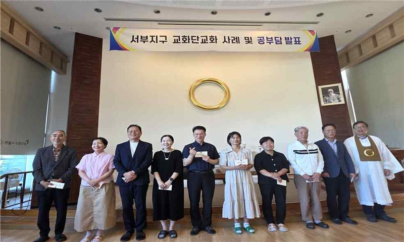
교당별 공부담과 교화단 우수 교화사례를 발표함.
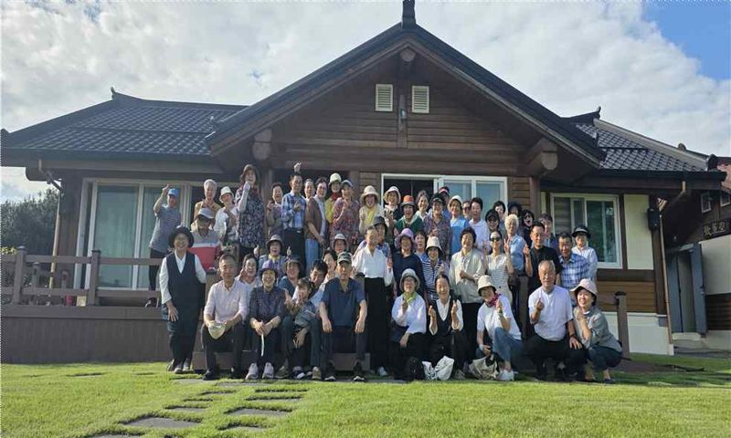
목포지구 교도가 변산성지를 순례함.
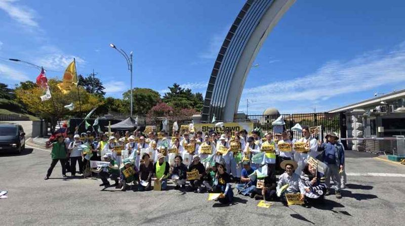
가동 정지일에 핵발전 중단 기원 기도식에 참석함.
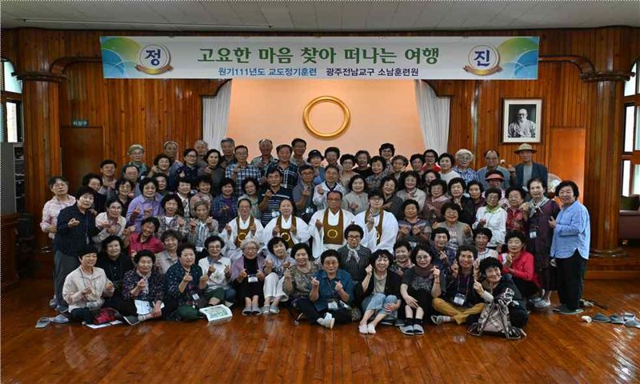
교구 정항 승급예정자 대상 훈련을 실시함.
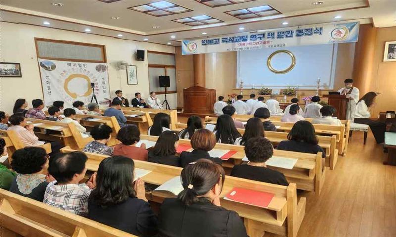
기도식, 문화원장 발간사 등 진행. 곡성 문화원장이 집필하고 발간비는 국비로 진행함.
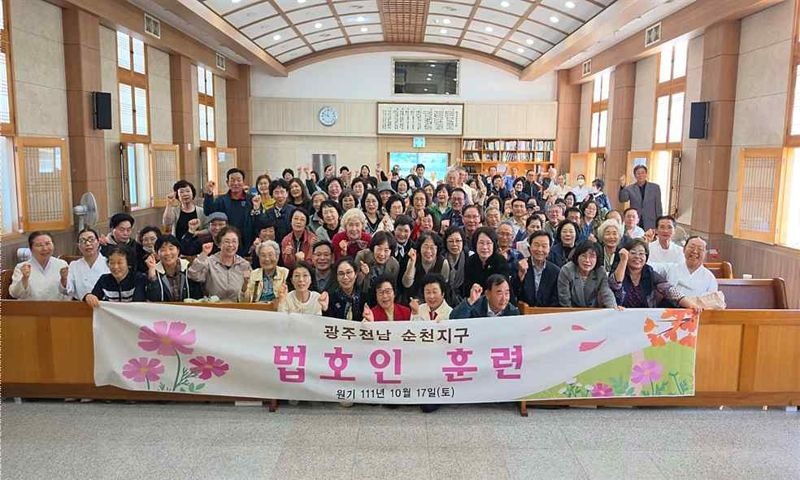
9개 교당 법호인이 공부담을 발표함.
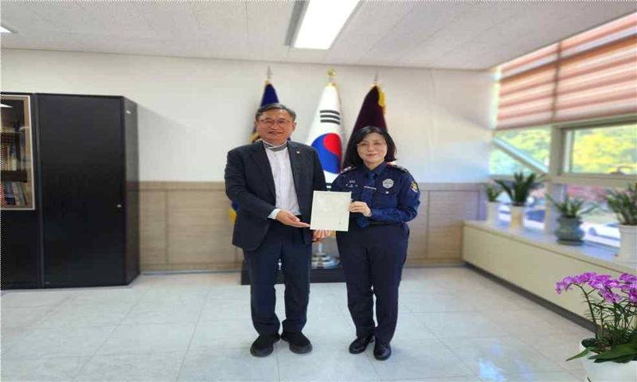
부산 이군도 교무가 광주교도소 교정위원으로 위촉됨.
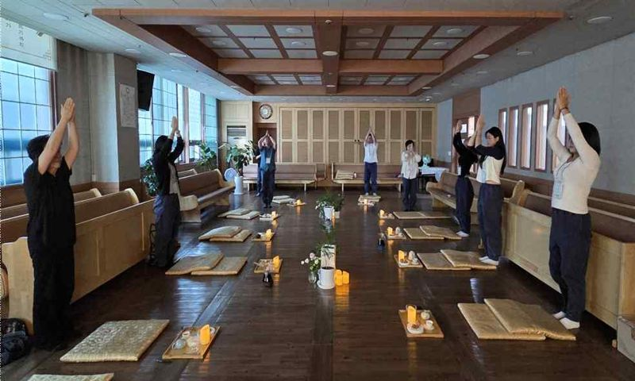
각종 명상 프로그램 운영. 교도·비교도가 함께 참석함.
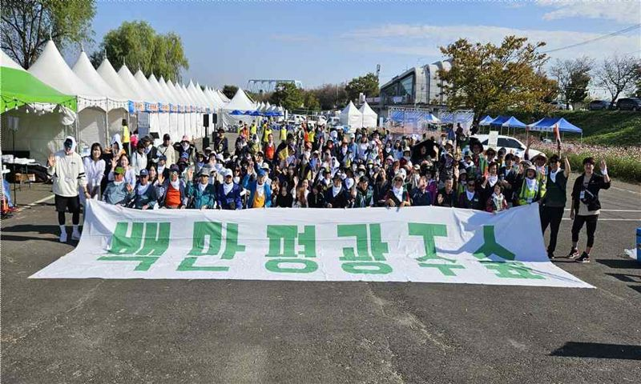
유도은 교무가 대표로 있는 광주녹색시민연합이 개최함.
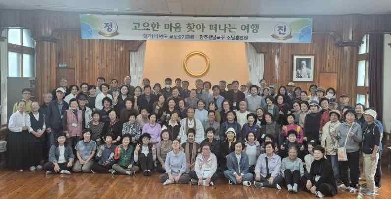
목포지구 교도 대상 정기훈련을 실시함.
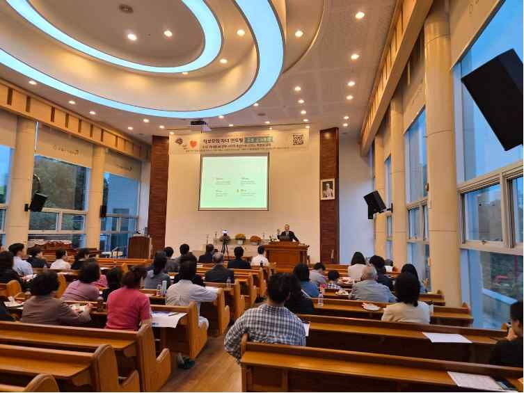
10. 25.부터 8주간 정규교육 진행 중(40여 명). 새삶회와 연계함.
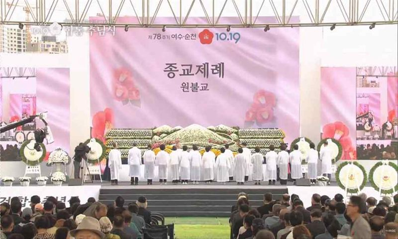
순천지구 교무·교도가 참석함.
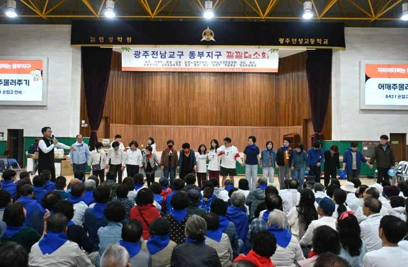
광주동부지구 교도가 함께하는 대소회를 개최함.
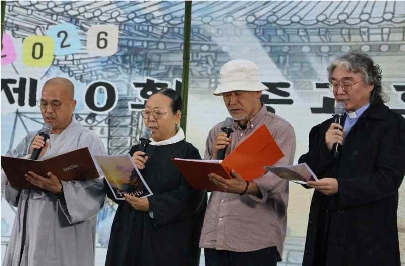
순천지역 종교화합 예술제. 임타원 송정심 교무 참석, 광주원음방송 공개방송 진행.
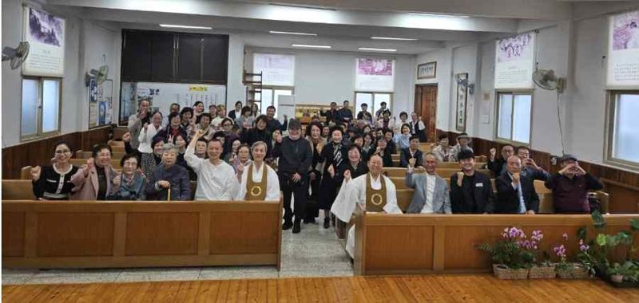
월산 김일상 종사 초청. 순천·동순천·구례 교당 연합 가족 초대법회.
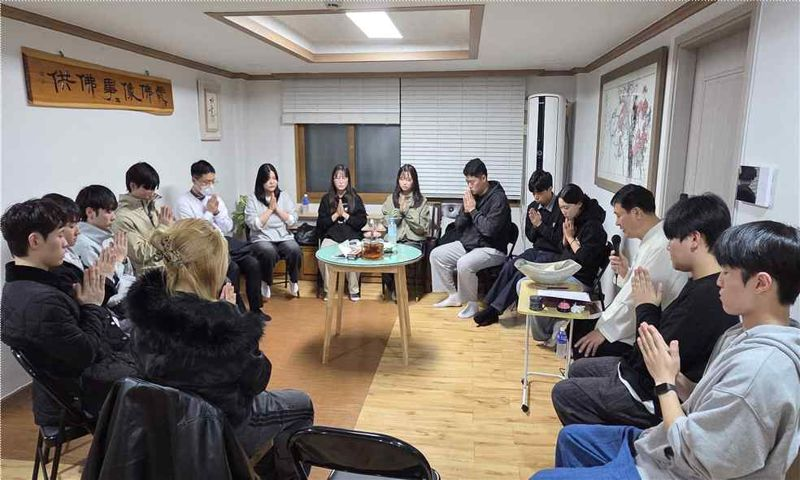
전남대·광주대·조선대 연합법회(광주교당, 중흥교당, 교구) 교우회 학생 참석.
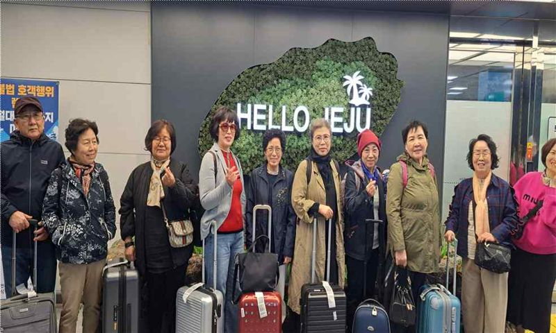
원기 110년 연원 우수 교도 선정. 사업비는 시타원 재단 상금과 농성교당 교화비로 충당함.
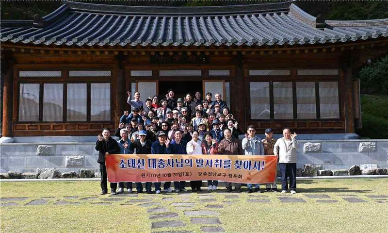
종곡유숙터, 원광선원, 제법성지, 연화삼매지 순례.
한글·워드·PDF 파일이나 카카오톡 메시지 등 편하신 방식으로 보내주시면 됩니다. 사진도 함께 보내주시면 정단회 자료에 담아 함께 나누겠습니다.
바쁘신 가운데 늘 단을 살펴 주셔서 감사드립니다.
각 단의 소식이 모여 정단회가 더 풍성해질 수 있도록 함께해 주시면 고맙겠습니다.